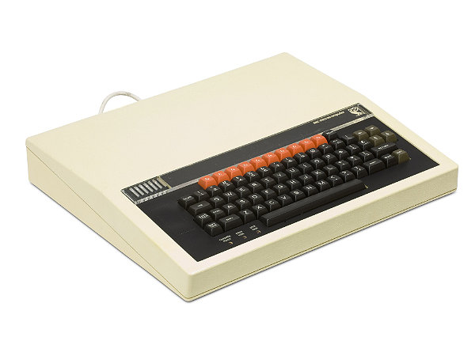
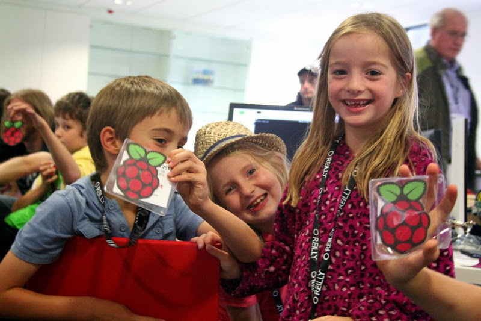

Python in Education
(Politics, People and Programming)


#1 Politics
Bruce Schneier points out, software itself does not distinguish morality or legality - it's merely "capability".
Yet capability permits certain forms of behaviour that in turn pose moral, legal and political questions, requirements and possibilities.
Furthermore, we're engineering a digital world from a certain point of view that is reflected in the capabilities of the code we create.
It is for this reason that writing software is both an ethical and political activity.
Ask yourself about your own project's capabilities.
Work out how it influences, empowers or diminishes your users.
If at all possible, promote autonomy.
Autonomy..?
My First Computer
"Asking what sort of education and learning our community supports is how we decide what sort of community we become.
For it is through education and learning that we engage with our future colleagues, friends and supporters."
Nicholas Tollervey, 2015. :-)
#2 People
PyCon UK:
Teachers
Kids
Part 1: Teachers
Teaching is the one profession that creates all the other professions.
Teaching is a calling (you're certainly not doing it for the money or "perks").
Teaching is the hardest job I've ever had to do.

Part 2: Kids' Day!



Developers Welcome!
#3 Programming

Come Play!
30 micro:bits
2pm this afternoon (after lunch)
Amphi H
Everyone welcome! :-)

Questions..?
MicroPython on the BBC micro:bit
- The source: https://github.com/bbcmicrobit/micropython
- The docs: http://microbit-micropython.rtfd.org/
- The tools: http://uflash.rtfd.org
- The editor: http://codewith.mu/
- Examples!
- Questions.